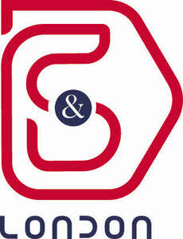

Trade Mark Journal No.2025/027 4 July 2025
UK00004219270 16 June 2025 (6,9,11,25)

- Class 6
- Metal lock boxes; Lock boxes of metal; Locks and keys, of metal; Metal locks for doors; Bicycle locks; Locks of metal; Metal locks for windows; Padlocks; Spring locks of metal, other than electric; Door holding devices of metal; Door lever furniture of metal; Lock bolts of metal; Lock washers of metal; Lock casings of metal; Lock barrels of metal; Lock parts of metal; Lock nuts of metal; Metal security lock cylinders; Locking gate hasps of metal; Metal keys for locks; Cylinder locks of metal; Locking pins of metal; Metal ball lock pins; Snowboard locks of metal; Metal bolts for locking doors; Bicycle locks of metal; Metal bicycle locks; Padlocks of metal; Metal padlocks; Metal sash locks; Keys (Metal -) for opening locks; Locks of metal, other than electric; Locks [other than electric] of metal; Non-electric locks of metal; Spring locks of metal; Latches of metal; Locks of metal for bags; Metal locking mechanisms; Metal door latches; Keys of metal; Metal deadbolts; Metal gate latches; Locks of metal for vehicles; Metal bump keys for locksmithing; Metal doors; Doors of metal; Door levers of metal; Metal door bolts; Door bolts of metal; Bolts (Door -) of metal; Hasps of metal; Door fasteners of metal; Latch bars of metal; Bars (Latch -) of metal; Metal latch bars; Gate hooks of metal; Padlocks of metal, other than electronic; Hooks (Door -) of metal; Metal locksets; Locksets of metal; Hinges of metal; Metal hinges; Trap doors of metal; Safes [metal or non-metal]; Metal locks [non electric]; Metal safes; Locks of metal for handbags; Door hinges of metal; Door guards of metal; Metal gates; Gates of metal; Door chains of metal; Door hardware (Metal -); Door seals of metal; Hinge clamps of metal; Striking plates of metal for locks; Metal sliding doors; Roll doors of metal; Non-electric locks made of metal; Screws of metal; Door buffers of metal; Door handles of metal; Metal door handles; Door holders of metal; Tilting metal doors; Metal folding doors; Folding doors of metal; Locking oil tank caps of metal; Shutter doors of metal; Screw rings of metal; Casement bolts (Metal -); Metal clamps; Handles of metal for doors; Safety doors of metal; Bolts of metal; Latches (Metal -) being fittings for doors; Rings of metal for keys; Metal rings for keys; Metal door frames; Door frames of metal; Roller doors of metal; Screen doors of metal; Metal door trim; Door pulls of metal; Lugs of metal; Screw caps of metal; Door friction stays of metal; Metal chain door guards; Strongboxes [metal or non-metal]; Box fasteners of metal; Catches (Door -) of metal; Metal wire [common metal]; Screw bolts of metal; Metal shackles; Shackles of metal; Metal components for doors; Armored doors of metal; Door fittings, of metal; Door fittings of metal; Shutters of metal; Metal shutters; Metal hooks; Hooks of metal; Bolt snaps of metal.
- Class 9
- Smartphone battery chargers; USB chargers; Battery chargers; Mobile phone battery chargers; Solar-powered battery chargers; Wireless battery chargers; Battery chargers for mobile phones; Electric battery chargers; Solar battery chargers; Rechargeable batteries; Chargers for batteries; Portable power chargers; Portable power supplies (rechargeable batteries); Portable chargers; Chargers for smartphones; Cell phone battery chargers; Battery chargers for use with telephones; Car charger; Electric-car charger; Solar-powered rechargeable batteries; Battery chargers for tablet computers; Rechargeable electric batteries; Battery compensation chargers; Chargers for electric batteries; USB chargers for electronic cigarettes; Anti-dust plugs for charger ports; Chargeable batteries; Mobile phone chargers; Battery charge devices; Battery chargers for laptop computers; Chargers; Battery chargers for electronic cigarettes; Cell phone battery chargers for use in vehicles; Earphones for smartphones; Battery charging equipment; USB chargers adapted for car cigarette lighter sockets; USB flash drives with micro USB connectors compatible with mobile phones; Chargers for mobile phones; Wireless chargers; Battery cables; Charging appliances for rechargeable equipment; Vaporizer batteries; Foldable smartphones; Battery adapters; Chargers for vaporizers; USB cables for cellphones; Fast chargers for mobile devices; Batteries for mobile phones; Mains chargers; Auxiliary batteries for mobile phones; Batteries for phones; Battery packs; Selfie sticks used as smartphone accessories; Chargers for cell phone; Power packs [batteries]; Battery booster cables; Batteries; Wireless charging pads for smartphones; Auxiliary battery packs; Waterproof smartphone cases; Batteries for use with mobile telecommunication devices; USB cables; Joystick chargers; Luminous USB cables; Anode batteries; Dry-cell batteries; Battery charging devices for motor vehicles; Batteries, electric; Electric batteries; Lithium batteries; Electric charging cables; Chargers for mobile telephones; Earphones for use with mobile telecommunication devices; USB port cards; Mobile telephone batteries; Dustproof plugs for jacks of mobile phones; Earphones; Anti-interference devices [electricity]; USB adapters; Anti-dust plugs for earphone jacks; Battery terminals; Solar batteries; Waterproof cases for smartphones; Electric storage batteries; Adapter cables for headphones; Car batteries; Power supplies for smartphones; Electrical batteries; Portable charging cases for electronic cigarettes and vaporizers; Rechargers for electric accumulators; USB sticks; Credit card-style USB flash drives; Electrical voltage tester pens; Flash lamps for smartphones; Chargers for electric accumulators; Volt sticks [electrical protection devices]; Electric adapter cables; Adapter cables (Electric -); Anti-dust plugs for cell phones; Rechargeable cells; USB card readers; Battery testers; Mobile phone speakers; Electrical storage batteries; Power supplies for smart phones; Waterproof cases for smart phones; Mobile phone straps; Terminals for batteries; Headphones for smart phones; Galvanic batteries; Power units [batteries]; Chargers for electronic cigarettes; Earbuds; Battery chargers for home video game machines; Camcorder waterproof cases; Chargers for electrical accumulators; Phone plugs; Nickel-cadmium batteries; Batteries for lighting; Lighting (Batteries for -); Nickel-cadmium storage batteries; Blank USB cards; Portable flash memory devices; Wireless portable printers for use with laptops and mobile devices.
- Class 11
- Shower bath cubicles; Shower baths; Shower bath fittings; Shower tubs; Shower bath installations; Shower cubicles; Shower taps; Shower fittings; Shower hoses for hand showers; Shower enclosures; Shower stalls; Shower hoses; Shower pans; Shower cabins; Shower doors; Shower trays; Shower cabinets; Shower roses; Shower valves; Shower heads; Heaters for shower baths; Shower mixers; Showers; Shower apparatus; Shower installations; Shower panels; Shower screens; Shower bath screens (Metal -); Shower head sprayers; Shower spray heads; Water shower apparatus; Water heaters for shower baths; Shower units; Shower attachments; Shower bases; Glazed shower cubicles; Shower platforms; Shower stands; Walls for shower cabins; Walls for shower cubicles; Shower sprayers [plumbing fittings]; Mixer showers; Non-metallic screens for shower baths; Outdoor showers for bathing; Bath tub jets; Shower mixing valves; Bathroom wash basins; Garden showers; Cubicles for showers; Electric shower apparatus; Hand-held showers; Shower cubicles [enclosures (Am.)]; Strainers for use with shower trays; Portable showers; Hand sets being shower fittings; Enclosures for showers; Shower control valves; Water heaters for showers; Spray heads for showers; Decontamination showers; Spray handsets for showers; Overhead showers; Cabinets for showers; Bath cubicles; Push-on sprays for use with bathroom faucets; Spray fittings [parts of shower installations]; Freestanding decontamination showers; Electric showers; Heads for showers; Cubicles [enclosures (Am.)] Shower ; Fitted liners for shower trays; Power showers; Shower control valves [plumbing fittings]; Hand showers; Bathroom sinks; Bathroom heaters; Sauna bath installations; Bath installations (Sauna -); Toilet bowls with integrated bidet water jets; Hot air bath fittings; Bath fittings (Hot air -); Shower doors with a non-metallic frame; Bath taps; Pedestal bathroom basins.
- Class 25
- Shirts; Turtleneck shirts; Short-sleeved shirts; Dress shirts; Long-sleeved shirts; Short-sleeve shirts; Open-necked shirts; Shirt yokes; Yokes (Shirt -); Collared shirts; Short-sleeved T-shirts; Polo shirts; Corduroy shirts; Shirt fronts; Knit shirts; Camouflage shirts; Button-front aloha shirts; Mock turtleneck shirts; Sweat shirts; Shirts for suits; Casual shirts; Shirts and slips; Pique shirts; Rugby shirts; Maternity shirts; Football shirts; Hooded sweat shirts; Woven shirts; Aloha shirts; Dress pants; Soccer shirts; Golf shirts; T-shirts; Bib shorts; Night shirts; Trousers shorts; Ramie shirts; Sleeveless jerseys; Sport shirts; Sleep shirts; Tennis shirts; Fishing shirts; Jeans; Yoga shirts; Shorts [clothing]; Denim pants; Under shirts; Button down shirts; Leggings [trousers]; Hunting shirts; Pants; Tee-shirts; Sports shirts with short sleeves; Sports shirts; Boy shorts [underwear]; Blue jeans; Trousers; Moisture-wicking sports shirts; V-neck sweaters; Nappy pants [clothing]; Printed t-shirts; Corduroy pants; Denim jeans; Camouflage pants; Sleeveless jackets; Men's dress socks; Jerseys [clothing]; Babies' pants [clothing]; Babies' pants [underwear]; Corduroy trousers; Embroidered clothing; Fleece shorts; Chino pants; Shorts; Sweat pants; Sweatpants; Sleeved jackets; American football shirts; Turtleneck sweaters; Bib overalls for hunting; Polo sweaters; Bib tights; Maternity pants; Golf trousers; Casual trousers; Trouser socks; Denims [clothing]; Sweat shorts; Trousers for sweating; Capri pants; Maternity shorts; Wristbands [clothing]; Sleeveless pullovers; Pirate pants; Warm-up pants; Slacks; Undershirts; Dress shoes; Padded shirts for athletic use; Snowboard trousers; Skirt suits; Baby pants; Khakis; Leather pants; Vest tops; Turtleneck pullovers; Rugby shorts; Polo knit tops; Overalls; Romper suits; Moisture-wicking sports pants; Tracksuit tops; Denim jackets; Collars [clothing]; Tracksuit bottoms; Jogging pants; Golf shorts; Cycling pants; Underwear; Mock turtleneck sweaters; Turtleneck tops; Sweatshirts; Nurse pants; Short overcoat for kimono (haori); Clothes; Gym shorts; Waterproof pants; Trousers of leather.
D & S LONDON LTD